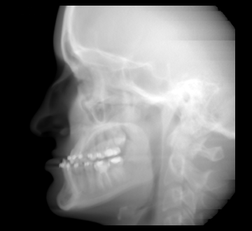
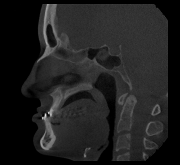

Una radiografía aplana todo; una tomografía lo separa
Las dos imágenes de abajo salen de la misma tomografía. A la izquierda, sumamos todo el volumen a lo largo de la cabeza: eso es lo que ve una radiografía, con dientes, hueso y metal encimados. A la derecha, un solo corte del cubo: cada estructura queda en su lugar. El proyecto parte de ahí: si ya tenemos el cubo, ¿cómo lo convertimos en un 3D que se entienda?


Lo que hace el programa
- Navegación multicorte: recorrer el cubo capa por capa en 2D (axial, coronal y sagital).
- Reconstrucción 3D por umbral: una barra de densidad que vuelve invisibles la piel y la encía y deja el hueso, los dientes o el esmalte, en un modelo que se gira, se ilumina y se corta.
Usa tres conceptos de computación gráfica: vóxeles, extracción de superficies (marching cubes) y iluminación para dar profundidad.
El CBCT: un cono de rayos X y una sola vuelta
La tomografía dental es un CBCT (tomografía de haz cónico). Gira una vez alrededor de la cabeza con un haz en forma de cono y un detector plano, y reconstruye el volumen con el algoritmo FDK. Es más rápida y usa menos radiación que un CT de hospital, pero tiene más ruido y sus números de densidad no están calibrados.
| CT médico | CBCT dental | Qué implica para el programa | |
|---|---|---|---|
| Haz y detector | Abanico, filas de detectores | Cono, panel plano | — |
| Adquisición | Muchas vueltas en espiral | Una sola rotación | — |
| Vóxel | Más largo en z | Igual en los 3 ejes, 0.1–0.5 mm | Ideal para ver dientes en 3D |
| Dosis | Más alta | Más baja | — |
| Ruido | Bajo | Alto (radiación dispersa) | Hay que suavizar antes del umbral |
| Valores | Calibrados en Hounsfield | No calibrados: cambian por equipo | Hay que normalizar cada estudio |
Qué tomografías usamos y cómo vienen
Buscamos tomografías que fueran dentales, públicas, anonimizadas, con el tamaño del vóxel en mm y en un formato legible. Revisamos nueve conjuntos de datos y elegimos dos.
Muestra CBCT de 3D Slicer
Tomografía dental real de 360×360×330 vóxeles de 0.5 mm, con brackets de ortodoncia. 24 MB, pública, sin registro. Hay dos estudios del mismo paciente (antes y después de una cirugía), cada uno en otra escala.
ToothFairy3 · STS-3D-Tooth
Tomografías dentales con cada diente etiquetado. Con 11 pacientes de STS-3D-Tooth medimos qué umbral separa mejor los dientes (ver resultados).
Descartados
PhysioNet: acceso restringido (curso y aprobación). CTooth: sin descarga verificable. STS "Integrity": pierde el tamaño del vóxel y el 3D sale deformado.
Del archivo al volumen
- DICOM es el estándar de los equipos: normalmente un archivo por corte, con una cabecera de datos y la imagen.
- Los archivos no vienen en orden: se ordenan por altura (
ImagePositionPatient) y se apilan en un cubo(z, y, x). - El número guardado no es la densidad:
densidad = valor × pendiente + intercepto. - Sin el tamaño del vóxel el 3D sale estirado. El espaciado entre cortes se calcula con la mediana de las distancias, para que un corte faltante no lo altere.
- Privacidad: el nombre y el documento del paciente viven en la cabecera. Por eso los datos nunca se suben a GitHub y se revisan con
scripts/verificar_anonimizacion.py.
Probado: una serie DICOM de 330 archivos carga en 0.8 s y da exactamente los mismos valores que el archivo original.
El programa: una ventana con 2D y 3D
Es una aplicación de escritorio en Python (PySide6 + PyVista/VTK). Cada módulo hace una sola cosa y se prueba por separado (50 pruebas automáticas).


Decisiones de diseño
- Contratos entre módulos (
Estudio,VisorCortes,Render3D): cada integrante trabajó en paralelo y luego se integraron en una sola ventana Qt. - Normalización por picos (
escala.py): el aire y el tejido blando definen una recta que lleva cualquier estudio a la misma escala (ver densidad). - Arcada dental (
region.py): la densidad sola no separa dientes de hueso denso; se agrega la ubicación de la boca. - Caché de las series DICOM en
data/processed/para no releer cientos de archivos.
Abrir la aplicación
pip install -r requirements.txt
python -m src.app_qt data/raw/PreDentalSurgery.gipl.gzLa tomografía va en data/raw/ y nunca se sube al repositorio. Los datos de esta página salen de scripts/generar_web.py, con los mismos presets de la aplicación.
Un cubo de vóxeles, visto en tres planos
Cada cubito del volumen es un vóxel (un "píxel 3D") y guarda cuánto frena los rayos X el material que hay ahí: su densidad. Estos son los tres planos que usa el visor del programa. Pasa el ratón para leer un vóxel; haz clic para mover los otros dos cortes.
Ventana / nivel. Una pantalla muestra ~256 grises, pero el volumen tiene miles de valores. La ventana elige qué parte se ve:
Lo que está por debajo sale negro y lo de arriba, blanco. Una ventana estrecha y alta separa el esmalte de la dentina. Los botones de la app usan las ventanas de radiología (dientes/hueso 1000/3000 HU, tejido blando 40/400 HU) convertidas a la escala del estudio.
Esta vista usa 1 de cada 2 vóxeles (1 mm) para que la página sea liviana; el programa usa 0.5 mm.
Para que no salga estirado, cada plano se dibuja con la proporción de su vóxel (en coronal y sagital, dz/dx).
Hounsfield, anatomía y por qué el CBCT hay que normalizarlo
El orden que aprovecha el umbral
aire < tejido blando ≈ pulpa < hueso trabecular < hueso cortical ≈ dentina < esmalte < metal
- El esmalte es el tejido más mineralizado del cuerpo (~96 % mineral).
- La dentina forma el cuerpo y la raíz (~70 % mineral); la pulpa es blanda, por eso al cortar el modelo aparece como un hueco.
- Se cruzan: el hueso cortical denso tiene la misma densidad que la dentina, y el metal supera al esmalte. Ningún umbral único los separa; por eso el programa limita los dientes a la arcada.
Hounsfield, en una línea
Así el agua vale 0 y el aire −1000 en cualquier CT calibrado. En el CBCT no: la dispersión, el campo de visión pequeño y la reconstrucción FDK cambian los números según el equipo y la posición (Pauwels et al., 2013 y 2015).
Lo comprobamos: el CBCT no está en Hounsfield
La muestra va de 0 a 3874 en crudo, con el aire en 0 (no −1000). El otro estudio del mismo paciente tiene el aire en −2239. Con números así, un umbral fijo aislaría estructuras distintas en cada estudio.
Solución del programa (escala.py): buscar en el histograma los picos de aire y tejido
blando, que siempre existen en un CBCT de cabeza, y llevarlos a 0 y 410 con una recta. Dos puntos fijos definen
la recta, como al calibrar un termómetro con el hielo y el agua hirviendo. Así los mismos presets sirven para los dos
estudios.

La barra de umbral: qué es hueso, qué es diente
Histograma de densidades
Cuántos vóxeles hay de cada densidad (eje vertical logarítmico). En celeste, lo que pasa el umbral. Clic en una barra para fijar el umbral.
Cómo leer el histograma
- El pico en 0 es el aire alrededor de la cabeza.
- El pico ancho cerca de 410 es la piel y el tejido blando (ahí lo deja la normalización).
- La cola de 600 a ~1300 es el hueso y los dientes; por encima de ~2000 solo queda metal.
Los presets (700, 1000, 1250, 2000) se midieron mirando el render en esta tomografía y coinciden con los percentiles altos del volumen (p99, p99.5, p99.9). Otsu, el umbral automático clásico, separa aire y piel pero no los dientes: son menos del 1 % de los vóxeles.
Marching cubes: del gris a la malla 3D
- Se recorre el volumen en cubos de 8 vóxeles vecinos (en 2D, celdas de 4).
- Cada esquina queda dentro o fuera del umbral: 256 casos en 3D, 15 configuraciones básicas.
- Una tabla dice qué triángulos poner en cada caso.
- Cada vértice cae sobre una arista por interpolación lineal entre los dos valores (los puntos blancos). Por eso la superficie pasa entre los vóxeles y no sale en escalera.
- La normal de cada vértice sale del gradiente de la densidad y se usa para iluminar.
En el programa: malla.contour([umbral]) de PyVista/VTK, o method="flying_edges", una versión
multihilo 4–5 veces más rápida. Para un rango (mínimo y máximo, como "esmalte sin metal") se marca la banda con 1 y el
resto con 0, y la superficie se dibuja en 0.5.
El modelo 3D: estructuras, luz, suavizado, corte y rendimiento
Estas mallas salen del mismo código del programa (superficie_por_banda con los presets de
densidades.py y la arcada dental) aplicado a la tomografía real. Cada pestaña responde una pregunta del
profesor. Arrastra para girar, rueda para acercar.
Aislar estructuras por densidad
Los rangos se midieron en esta tomografía (están en src/densidades.py). Dientes y esmalte se
limitan a la arcada dental, igual que en la aplicación. No se publica la piel ni los tejidos blandos porque
reconstruyen la cara del paciente.
P2 · ¿Qué iluminación ayuda a ver raíces e irregularidades?
- Plano: una normal por triángulo; se ven las facetas.
- Gouraud: luz en los vértices, se interpolan los colores; los brillos pequeños se pierden.
- Phong: se interpolan las normales y la luz se calcula en cada píxel; los brillos marcan curvas finas como las raíces. Es el que usa el programa (
smooth_shading=True). - Oclusión ambiental (SSAO) y sombras oscurecen los huecos entre raíces y dan profundidad.
P3 · ¿Cuánto cuestan los polígonos?
Hay dos costos distintos:
- Extraer la superficie depende de los vóxeles y se paga al mover la barra de umbral.
- Dibujarla depende de los triángulos y se paga en cada cuadro mientras se gira.
Optimizaciones del programa: tomar 1 de cada 2 vóxeles (reduccion=2: 4.4× menos triángulos, porque la
superficie crece con el área), recalcular al soltar la barra, flying edges (4–5× más rápido) y simplificar
la malla (decimate). Ver la tabla en resultados.
P4 · ¿Cómo se suaviza sin perder la forma?

- Antes de la malla: el programa aplica un filtro gaussiano al volumen (σ = 0.5 mm en hueso y dientes) para quitar "pedacitos sueltos". En el esmalte no, porque es una capa delgada y se borraría.
- Laplaciano: cada vértice va al promedio de sus vecinos. Suaviza, pero encoge.
- Taubin: alterna un paso que encoge y otro que infla: quita el ruido sin encoger.
Se calcula en vivo (λ = 0.33, μ = −0.34). Medido en el programa: Laplaciano −10.4 % de volumen, Taubin −1.3 %. El modelo está recortado, así que el volumen es aproximado.
P5 · Plano de corte: ver por dentro
Todo lo que queda de un lado del plano se oculta. Como la superficie es una cáscara, al cortarla se ve el interior en rojo: las cavidades de la pulpa y los conductos aparecen como superficies internas del diente.
En PyVista: superficie.clip(normal, origin) para un corte fijo o pl.add_mesh_clip_plane(superficie) para un plano que se arrastra. La aplicación usa el corte fijo en la vista de tejidos blandos (corte sagital).
Lo que encontramos
En crudo, el aire vale 0 (no −1000); en el otro estudio, −2239. Por eso el programa normaliza cada estudio antes de aplicar los presets.
Medido en 11 pacientes etiquetados. La literatura sugería 1300 HU: el valor real es mucho menor.
0.086 s contra 0.408 s para extraer la superficie a resolución completa.
Cuánto encoge el volumen de los dientes con cada suavizado.
Calibración con 11 pacientes (STS-3D-Tooth)

Tiempo de extracción de la superficie (umbral 1000)
| Reducción | contour | marching_cubes | flying_edges | Triángulos |
|---|---|---|---|---|
| 1 (0.5 mm) | 0.408 s | 0.278 s | 0.086 s | ≈ 423 000 |
| 2 (1 mm) | 0.053 s | 0.047 s | 0.013 s | ≈ 96 000 |
| 4 (2 mm) | 0.007 s | 0.008 s | 0.002 s | ≈ 19 500 |
Volumen de 330×360×360 vóxeles, portátil Ryzen 7 5800H. En la app, cada botón de estructura responde en 0.03–0.3 s.
Limitaciones
Densidades que se cruzan
El hueso cortical denso se parece a la dentina; un solo umbral no los separa. Por eso se agrega la ubicación: dientes y esmalte se limitan a la arcada.
El metal manda
Brackets e implantes superan al esmalte y generan rayas (artefactos) que crean superficies falsas.
Volumen parcial
En los bordes un vóxel mezcla dos tejidos y queda con un valor intermedio: el esmalte delgado puede caer como dentina.
Detalle vs. fluidez
Reducir la resolución hace la interacción fluida, pero borra raíces delgadas y conductos.
Respuesta a la pregunta de investigación
La pregunta¿De qué manera podemos desarrollar una interfaz gráfica que transforme los datos volumétricos de una tomografía dental (CBCT) en un modelo 3D interactivo, aislando estructuras específicas según su densidad?
Combinando cuatro piezas:
- Un lector que normaliza cada estudio por sus picos de aire y tejido blando, porque el CBCT no está calibrado.
- Un visor multicorte con ventana/nivel para recorrer el volumen en 2D.
- Una isosuperficie por umbral (marching cubes / flying edges) con presets por banda de densidad y la ubicación de la arcada, para separar lo que la densidad sola no separa.
- Iluminación Phong y suavizado para que la forma se perciba bien, con la reducción de resolución que mantiene la interacción fluida.
Trabajo futuro: segmentación con aprendizaje automático usando las etiquetas de ToothFairy, renderizado volumétrico, medición de distancias en mm y exportación a STL para impresión 3D.
Las 5 preguntas de la propuesta
El profesor puede preguntarle a cualquiera. Cada tarjeta tiene la respuesta corta y lleva a la parte de la página que la muestra.
¿Cómo se traduce la escala de grises (Hounsfield) en una malla 3D?
Se reescala el valor guardado a densidad, se normaliza, se elige un umbral y marching cubes pone triángulos donde la densidad cruza ese valor, con interpolación lineal y normales del gradiente.
Secciones 6, 7 y 8 · Emanuel / Nicolás P2¿Qué iluminación ayuda a ver raíces e irregularidades?
Phong: normales interpoladas y luz por píxel; los brillos especulares marcan curvas finas. Gouraud pierde brillos; plano muestra facetas. Oclusión ambiental oscurece los huecos.
Laboratorio → P2 · Luz · Emanuel P3¿Qué impacto tienen miles de polígonos en los FPS y cómo se optimiza?
Extraer depende de los vóxeles; dibujar, de los triángulos. Submuestreo (4.4× menos triángulos), recalcular al soltar, flying edges (4–5×) y decimación.
Laboratorio → P3 · FPS y Resultados · Emanuel / David P4¿Cómo se suaviza para que no se vea escalonado?
Gaussiano sobre el volumen antes de la malla (σ por estructura) y Taubin sobre la malla, que no encoge (−1.3 % frente a −10.4 % del Laplaciano). Phong da la sensación de continuidad.
Laboratorio → P4 · Suavizado · Emanuel / David P5¿Se puede rebanar el modelo con un plano de corte?
Sí: el plano oculta un lado; como la superficie es una cáscara, se ve el interior y la pulpa aparece como cavidad. En la app, la vista de tejidos blandos usa un corte sagital fijo.
Laboratorio → P5 · Corte · Emanuel / Juan +Otras preguntas probables
¿Qué es un vóxel? ¿Por qué importa el espaciado? ¿Superficie o volumen? ¿Y la privacidad? ¿Cómo eligieron los umbrales? Respuestas en el guion del equipo.
Guion del equipoQuién hizo qué
Documentos
Referencias principales
- Scarfe W.C., Farman A.G. (2008). What is cone-beam CT and how does it work? Dental Clinics of North America, 52(4), 707–730.
- Pauwels R. et al. (2015). CBCT-based bone quality assessment: are Hounsfield units applicable? Dentomaxillofacial Radiology, 44(1).
- Pauwels R. et al. (2013). Variability of dental cone beam CT grey values for density estimations. British Journal of Radiology, 86(1021).
- Reshetnikov A. et al. (2024). Dental tissue density in healthy children based on radiological data. JMIRx Med, 5, e56759.
- Lorensen W.E., Cline H.E. (1987). Marching cubes: a high resolution 3D surface construction algorithm. SIGGRAPH, 21(4), 163–169.
- Schroeder W., Maynard R., Geveci B. (2015). Flying edges: a high-performance scalable isocontouring algorithm. IEEE LDAV.
- Phong B.T. (1975). Illumination for computer generated pictures. Communications of the ACM, 18(6). · Gouraud H. (1971). IEEE Trans. Computers, C-20(6).
- Taubin G. (1995). A signal processing approach to fair surface design. SIGGRAPH '95.
- Fedorov A. et al. (2012). 3D Slicer as an image computing platform for the Quantitative Imaging Network. Magnetic Resonance Imaging, 30(9). (Muestra CBCTDentalSurgery.)
- Lumetti L. et al. (2026). ToothFairy3 (MICCAI 2026) · STS-3D-Tooth (Wang Y. et al., Scientific Data 12, 2025).